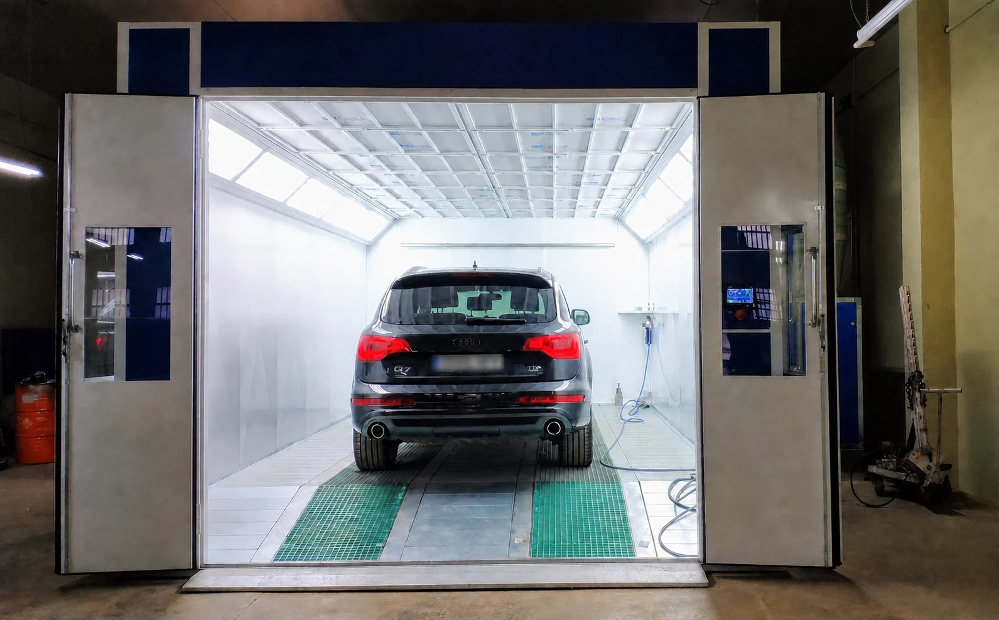

Instalación terminada
De la compra a una cabina lista en el taller
Este proyecto documenta una cabina de pintura instalada en España. Aproximadamente dos meses después de la compra, el cliente compartió las fotografías del montaje terminado. El equipo ya está integrado en el área de trabajo y permite la entrada de un turismo o SUV.
Las imágenes permiten apreciar el acceso frontal, la puerta peatonal, el panel de control y la iluminación interior. La fotografía con el vehículo dentro ayuda además a entender mejor el espacio de trabajo real que una imagen de catálogo.

Qué debe confirmarse antes de comprar una cabina de pintura
Una cabina debe adaptarse al taller, al vehículo más grande y a los servicios disponibles. Antes de preparar una propuesta conviene confirmar:
- las dimensiones del espacio disponible y los accesos del taller;
- la longitud, anchura y altura del vehículo más grande;
- la tensión, el número de fases y la frecuencia eléctrica;
- el sistema de calefacción: eléctrico, diésel, gas natural o sin calefacción;
- la salida de extracción, la cimentación y la ubicación del equipo;
- el destino de entrega y la fecha prevista de instalación.
Planificar a la vez transporte, obra e instalación
Este caso tardó aproximadamente dos meses desde la compra hasta la instalación comunicada por el cliente, pero no debe interpretarse como un plazo fijo. La fabricación, el transporte internacional, la preparación del suelo, la conexión eléctrica y el montaje pueden cambiar según el proyecto.
La forma más práctica de reducir retrasos es revisar los planos del taller antes de fabricar y preparar con antelación la base, el recorrido de extracción y la alimentación eléctrica. Así, el trabajo local puede avanzar mientras el equipo está en producción o en tránsito.
Preguntas frecuentes
¿Cuánto tarda una cabina de pintura en llegar e instalarse en España?
En este proyecto transcurrieron aproximadamente dos meses desde la compra hasta la instalación confirmada. El plazo de cada pedido depende de la configuración, la producción, el transporte y la preparación del taller.
¿Cómo se elige el tamaño correcto?
Se parte del vehículo más grande que entrará en la cabina y se comprueban también el espacio de trabajo, las puertas, el recorrido del aire y los accesos exteriores del edificio.
¿Qué información necesita Gubot para cotizar?
Necesitamos país y ciudad de instalación, dimensiones del taller, vehículo máximo, tensión, fases, frecuencia, calefacción preferida y plazo de compra. Fotografías y planos del lugar facilitan la revisión.
¿Está preparando una cabina de pintura en España?
Envíenos las medidas del taller, los datos eléctricos y el vehículo más grande. Podemos comparar las opciones de cabina con o sin calefacción y recomendar una configuración para su proyecto.
Enviar datos del proyecto